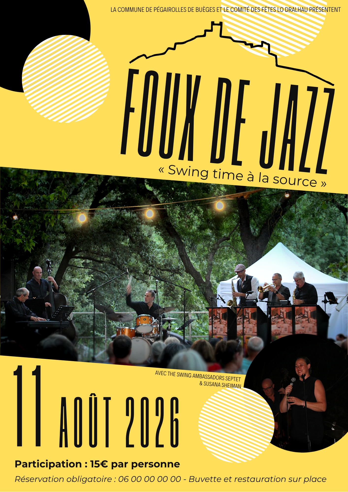

La commune de Pégairolles de Buèges & le comité des fêtes Lo Dralhau présentent
« Swing time à la source »
Avec The Swing Ambassadors Septet & Susana Sheiman
Réserver ma place — 15€Le lieu
Le mot Foux vient de l'occitan fos, qui désigne une source — du latin fons, fontis.
La spectaculaire source de la Buèges est l'un des sites emblématiques du territoire du Grand Pic Saint-Loup. Inspiré par les vibrations de ce lieu exceptionnel, un des fondateurs des Swing Ambassadors a proposé à la Commune de Pégairolles de Buèges d'y tenir un spectacle de jazz en plein air.
Après le succès de la première édition en juillet 2025, cette deuxième édition s'annonce encore plus festive, avec le concours de la communauté de communes du Grand-Pic-Saint-Loup.

Les artistes
Chant & Scat
Diva madrilène et l'une des plus grandes voix du jazz ibérique et européen, Susana Sheiman a rejoint les Swing Ambassadors en 2017 pour un vibrant hommage aux grandes voix du jazz. Depuis, le succès est au rendez-vous et le groupe se produit partout en France dans les plus grands festivals.
Inspirés par les clubs de Kansas City (1920–1970), les talentueux musiciens du Swing Ambassadors Septet élaborent un programme festif, raffiné et efficace. Leur répertoire puise dans Count Basie, Duke Ellington, Cole Porter et bien d'autres noms prestigieux du jazz classique.
Informations pratiques
Réservation obligatoire — Places limitées
📞 Par téléphone : 06 50 11 78 40
✉️ Par e-mail : lo-dralhau@mailo.com
Plan d'accès
Source de la Buèges — Commune de Pégairolles de Buèges, à 22 km de St-Martin de Londres.
Parking et toilettes publiques à proximité immédiate du site.